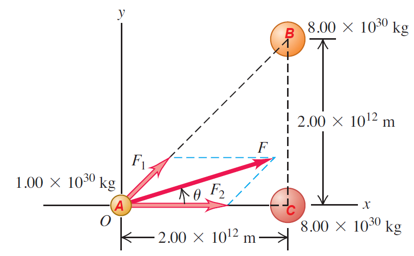

Ley de Gravitación de Newton.
Ejemplos.
- Dos masas se atraen inicialmente con una fuerza de $320N$. Si la distancia entre ellas se duplica y la masa de la primera se triplica; calcular la nueva fuerza de atracción.
Solución.
Debemos plantear la ecuación del sistema para el primer instante. Conocemos la fuerza de este primer instante la cual es de $320N$. Entonces la ecuación queda:
$F_g1=G\frac{m_1m_2}{d^2}=320N$ Ahora, en la nueva situación, nos dicen que la distancia entre las masas se duplica y que la masa de la primera se triplica.
$F_g2=G\frac{3m_1m_2}{(2d)^2}$ Lo que debemos hacer ahora, es reacomodar los términos para poder reemplazar la primera ecuación en la segunda.
$F_g2=\frac{3}{4}G\frac{m_1m_2}{d^2}\Rightarrow F_g2=\frac{3}{4}320N=240N$ Finalmente el nuevo valor de la fuerza es de $240N$. - Muchas estrellas del firmamento son en realidad sistemas de dos o más estrellas que se mantienen juntas gracias a su atracción gravitacional mutua. La figura muestra un sistema de tres estrellas en un instante en que están en los vértices de un triángulo rectángulo de 45°. Calcule la magnitud y la dirección de la fuerza gravitacional total ejercida sobre la estrella pequeña por las dos grandes.
 Imagen tomada de: Física Universitaria Volumen 1. Sears - Zemansky.
Solución
Inicialmente debemos suponer que las estrellas son esferas. Aplicaremos la Ley de Gravitación universal para las dos parejas de cuerpos posibles. Ya que nos preguntan por la fuerza resultante afectuada sobre la estrella más pequeña las parejas serán:
- La fuerza que aplica la estrella $B$ sobre la estrella $A$: $F_{BA}$
- La fuerza que aplica la estrella $C$ sobre la estrella $A$: $F_{CA}$
Entonces para la $F_{BA}$ veremos:
$F_{BA}=6,67\times10^{-11}\frac{Nm^2}{kg^2}\frac{(8\times10^{30}kg)(1\times10^{30}kg)}{(\sqrt{(2\times10^{12}m)^2+(2\times10^{12}m)^2})^2}$
Notamos que la distancia entre las dos estrellas en cuestión es la hipotenusa de un triangulo rectangulo, por lo tanto es util aplicar el teorema de pitagoras. Notemos entonces que el cuadrado de la definición de la ley de gravitación re anula con la raiz de la hipotenusa de pitagoras. Por lo tanto, la ecuación queda:
$F_{BA}=6,67\times10^{-11}\frac{Nm^2}{kg^2}\frac{(8\times10^{30}kg)(1\times10^{30}kg)}{(2\times10^{12}m)^2+(2\times10^{12}m)^2} =6,67\times10^{25}N$
Ahora, de manera similar, encontraremos la fuerza que aplica la estrella $C$ a la estrella $A$. Vemos que $F_{CA}$:
$F_{CA}=6,67\times10^{-11}\frac{Nm^2}{kg^2}\frac{(8\times10^{30}kg)(1\times10^{30}kg)}{(2\times10^{12}m)^2} =1,33\times10^{26}N$
A continuación, debemos hallar las componentes $x$ y $y$ de las fuerzas.
Para $F_{BA}$:
$F_{BA}x=(6,67\times10^{25}N)(cos45°)=4,72\times10^{25}$ $F_{BA}y=(6,67\times10^{25}N)(sen45°)=4,72\times10^{25}$
Y para $F_{CA}$, como solo tenemos su componente horizontal entonces:
$F_{CA}x=(1,33\times10^{26}N)$
Entonces, al hacer la suma vectorial de cada una de las componentes de las fuerzas:
$Fx=F_{BA}x+F_{CA}x=1,81\times10^{26}$ $Fy=F_{BA}y=4,72\times10^{25}$
Finalmente para la magnitud de la fuerza, la hallamos de manera similar al teorema de Pitágoras, pues:
$\left | F \right |=\sqrt{F_{x}^2+F_{y}^2}$ $\left | F \right |=\sqrt{(1,81\times10^{26}N)^2+(4,72\times10^{25}N)^2}=1,87\times10^{26}N$
Y para su dirección relativa al eje $x$:
$\theta = arctan\frac{F_{x}}{F_{y}} = arctan\frac{1,81\times10^{26}N}{4,72\times10^{25}N}= 14,6°$
Luisa Ortiz - Educación en Tecnología.
Universidad Distrital Francisco José de Caldas.